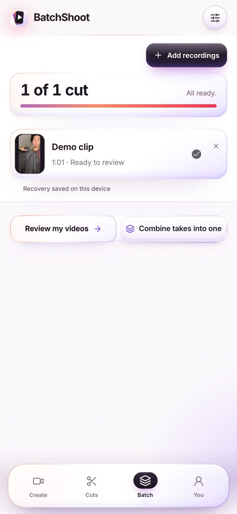
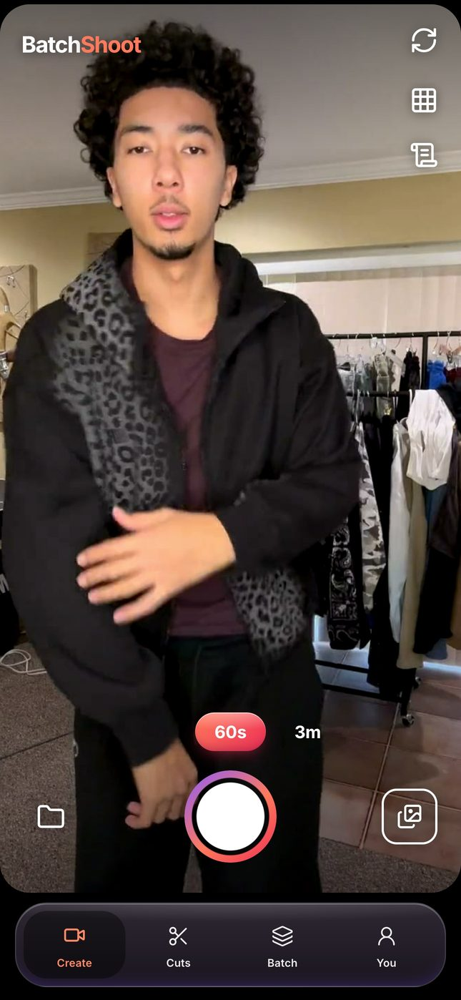
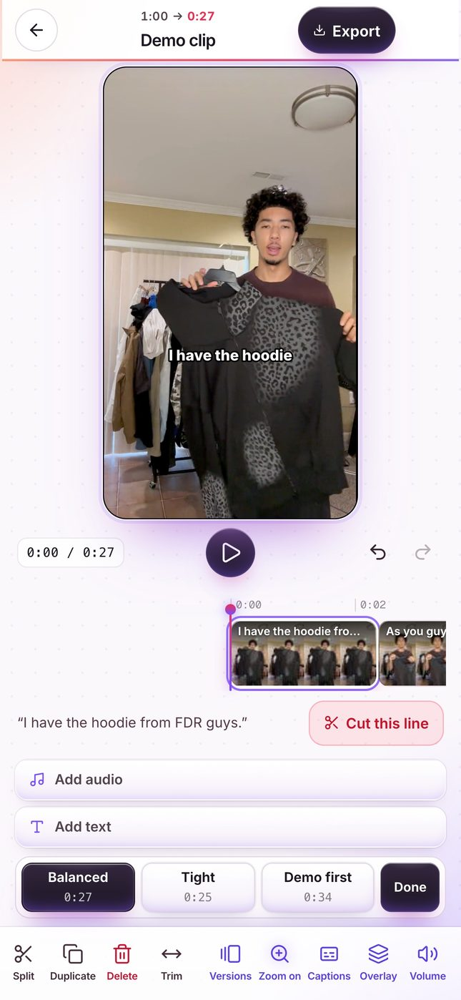
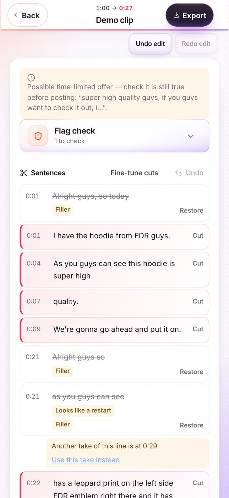

Film, or add your takes.
Record in the app, or add takes from Photos or Files.
Batch editing for product videos
Batch cut & caption product videos on your iPhone. No upload needed.
In beta on TestFlight. Not on the App Store yet.



See it
Left: the take as it was filmed, pauses and restarts included. Right: BatchShoot’s first cut of it, with captions on.
1:000:27this take, first cut
Both clips loop their first 20 seconds, without sound.
How it works
Record in the app, or add takes from Photos or Files.
One goal, one caption style. BatchShoot works through them one at a time, in the order you added them.
Save each MP4 to BatchShoot’s folder in Files, then share it to Photos, AirDrop or any app that accepts video. Or save a whole batch to Photos in one tap.
What it does
See every cut
Every edit says what it kept and what it left out. Lines are tagged when they look like a restart, filler or live-only chatter. Tap a sentence to cut it or bring it back, and Undo steps back.
Said a line twice? Choose which take to keep. Protect a moment so it is never cut, and nudge a cut by a tenth of a second.

Check before you post
Points at lines that often need a second look in product videos, says why, and how to reword them. It never removes a line by itself.
BatchShoot’s own word list. Not any platform’s rules, and not legal advice.
Captions included
Captions are the transcript of what you said, burned into the video in bold, boxed or yellow, or turned off. Fix a misheard product name once and apply it to every recording you select.
Shoot day
List the products you are filming and the lines every video must include. BatchShoot checks each recording against what was actually said. An optional teleprompter shows your lines while you record; it never appears in the video.
No upload needed
BatchShoot listens, cuts, captions and exports on your iPhone, so there is no upload to stall and no server queue to wait in. Speech is processed on the device; some builds need internet once to install English language assets.
Optional features that send your text, pictures or recordings ask first; the privacy policy lists them.
The details
Questions
Not yet. It is in beta through TestFlight, Apple’s app for trying new apps before they reach the App Store. Email us and we’ll send you an invite.
iPhone on iOS 17 or later.
No upload is needed. BatchShoot listens, cuts, captions and exports on your iPhone. Optional features that send your text, pictures or recordings ask first; the privacy policy lists them.
Each recording can be up to 3 minutes, 300 MB and 1080p, and each export can be up to 1 minute. A batch holds up to 30 recordings, 1 GB in total.
English speech only.
No account needed. No ads and no advertising tracking.
No. BatchShoot edits by what was said. It never makes footage: everything in your export is something you filmed.
Yes. Every edit says what it kept and what it left out. Tap a sentence to cut it or bring it back, and Undo steps back. The batch export waits until you have watched each edit through.
iPhone beta
BatchShoot is in beta through TestFlight, Apple’s app for trying new apps before they reach the App Store. Email us and we’ll send you an invite.
Email to join the betaOpens your email app, addressed to contact@universalaillc.com.